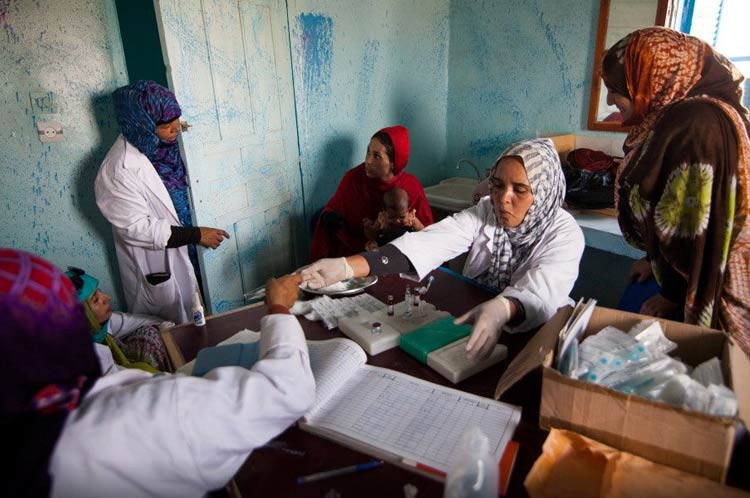
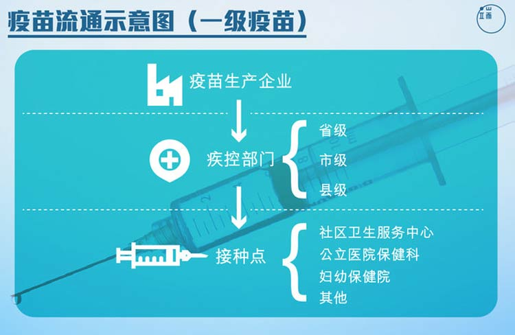
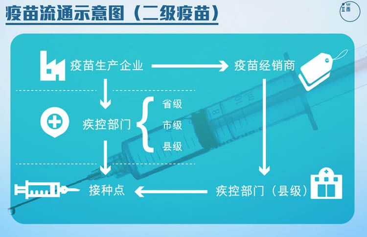

小时候因为调皮捣蛋、不好好吃饭受到过很多次妈妈的威胁，比如“再不听话就把你从窗户扔出去，外面可是有狼的”，或者“不吃光这碗饭我就带你去打针”……天了噜，要给我打针，吃完这一碗，再给我三碗好不？！
自从人类在地球上行走，就开始了与疾病的漫长斗争。不得不说疫苗真的是一项伟大的发明，在它出现之前，每年都有数以百万计的人口死于流行疾病。在它出现以后，小朋友要打疫苗，成年人要打疫苗，担心在外吃饭不安全会打乙肝疫苗，一不小心被狗咬了还必须打狂犬疫苗……
疫苗那么重要，一般来说都是不会出差错的。可是！就在不久前，一则新闻让许多家长焦虑不已——“问题疫苗流入全国24省区市”。那么，小编我就来给大家科普一下疫苗的知识吧！疫苗分为两种，一类疫苗和二类疫苗，一类疫苗是由政府免费提供的公民应当依照政府规定进行接种的疫苗，二类疫苗是指由公民自费并且自愿受种的其他疫苗，它们的流通示意图如下：
 一级疫苗的全部流通过程全部由国家部门把控，二级疫苗在部分流程上会有经销商介入。事儿就是这么个事，如何接种还要自己酌情考虑。
儿童免疫预防接种，关系到下一代的健康成长，涉及千家万户。为了加强对这项工作的组织实施，进一步提高影响力度，促进社会各界人士积极参与，保证免疫接种率，有效地防止相应传染病的发生和流行，最终达到消灭疾病的目的，1986年经国务院批准确定，每年4月25日为全国儿童预防接种宣传日。每年的这一天，既是广大儿童的节日，也是广大免疫预防工作者的节日。
1、每年的4月25日是儿童预防接种宣传日，这个节日的目的有很多，正文有详细介绍；
2、虽然注射疫苗益处多多，但是宝宝还是怕……